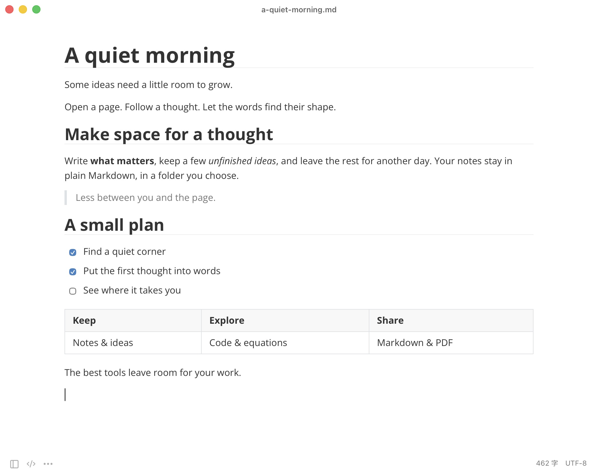

<!doctype html>
<html lang="en">
<meta charset="utf-8">
<meta name="viewport" content="width=device-width,initial-scale=1">
<title>Open Typora — A quiet place for your words</title>
<style>
*{box-sizing:border-box}html,body{margin:0;width:1800px;height:1000px;overflow:hidden}body{font-family:"Avenir Next",Avenir,"Segoe UI",sans-serif;color:#262626;background:#fff}.canvas{position:relative;width:1800px;height:1000px}.brand{position:absolute;top:78px;left:110px;display:flex;align-items:center;gap:13px;font-size:29px;font-weight:500;letter-spacing:-.9px}.brand img{width:43px;height:43px}.copy{position:absolute;left:112px;top:302px;width:558px}.copy h1{font-size:59px;line-height:1.18;letter-spacing:-2.1px;font-weight:500;margin:0 0 28px}.description{font-size:23px;line-height:1.65;letter-spacing:-.25px;color:#737373;margin:0;max-width:475px}.features{margin:37px 0 0;padding:0;list-style:none;display:grid;gap:18px;font-size:21px;color:#494949}.features li{display:flex;align-items:center;gap:14px}.features svg{width:23px;height:23px;fill:none;stroke:#727272;stroke-width:1.5;stroke-linecap:round;stroke-linejoin:round}.window{position:absolute;left:750px;top:156px;width:950px;height:700px;border-radius:10px;overflow:hidden;background:white;border:1px solid #e7e7e7;box-shadow:0 14px 48px #0000000e,0 2px 7px #00000008}.window img{display:block;width:100%;height:auto}.platform{position:absolute;left:114px;bottom:91px;font-size:17px;color:#858585;letter-spacing:.25px}.platform span{padding:0 11px;color:#c4c4c4}.credit{position:absolute;right:103px;bottom:91px;font:16px "Avenir Next",Avenir,sans-serif;color:#999;letter-spacing:.1px}
</style>
<main class="canvas">
  <div class="brand">Open Typora</div>
  <section class="copy">
    <h1>A quiet place<br>for your words.</h1>
    <p class="description">Write and read on the same page.<br>Simple Markdown. A little less distraction.</p>
    <ul class="features">
      <li><svg viewBox="0 0 24 24" aria-hidden="true"><path d="M4 20h4L20 8l-4-4L4 16v4Z M14 6l4 4"/></svg>Live Markdown editing</li>
      <li><svg viewBox="0 0 24 24" aria-hidden="true"><path d="M4 5h6l2 2h8v12H4V5Z M4 10h16"/></svg>Your files, in your folders</li>
      <li><svg viewBox="0 0 24 24" aria-hidden="true"><path d="m8 7-5 5 5 5m8-10 5 5-5 5m-3-13-2 16"/></svg>Open source, from the start</li>
    </ul>
  </section>
  <div class="window"></div>
  <div class="platform">macOS<span>·</span>Windows</div>
  <div class="credit">github.com/AniChikage/open-typora</div>
</main>
</html>
